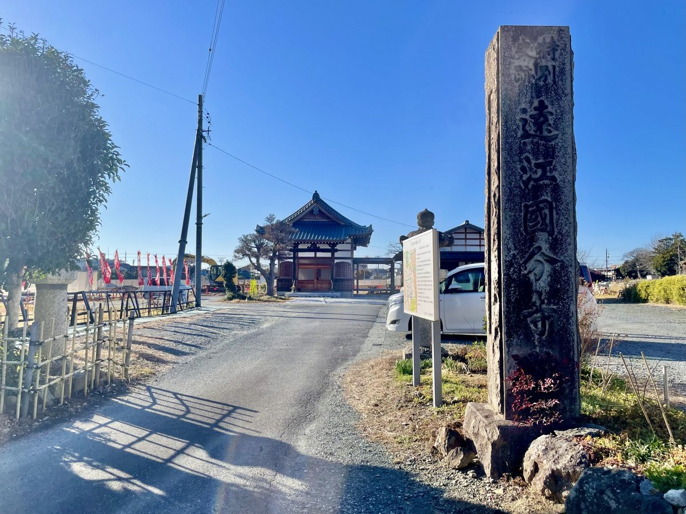

遠江国分寺跡と、
古代磐田のはじまり

JR磐田駅の北口から、まっすぐ北へのびる通りがある。地元では「ジュビロ通り」とも呼ばれるが、正式な名は「天平通り」という。十五分ほど歩くと、市役所の北側に、芝生のひろがる公園に行き当たる。これが遠江国分寺跡である。通りの名が「天平」であるのは、伊達ではない。この道の先に、奈良時代――天平の世の、遠江国の中心があったからである。
芝のひろがる、静かな広場
はじめて訪れた人は、たいてい少し拍子抜けする。国の特別史跡と聞いて身構えてくると、目の前にあるのは、ただ広い芝の公園だからである。だが、足もとをよく見ると、ところどころに礎石が顔を出し、建物の輪郭が地面に示されている。かつてここに、堂々たる古代寺院が建っていたのだと、その痕跡が静かに語りかけてくる。
遠江国分寺は、今からおよそ千三百年近く前、奈良時代の天平13年（741年）にさかのぼる。この年、聖武天皇は「国分寺建立の詔」を発した。たびかさなる災いや疫病に揺れる世を、仏教の力で安んじようとした願いから、全国の国ごとに寺を建てよ、と命じたのである。正式には金光明四天王護国之寺といい、各地に七重塔を建て、経を写して納めることが求められた。その遠江国の一つが、国府の置かれたこの磐田の地に建てられた。
なぜ磐田だったのか。それは、ここが当時、遠江国の役所――国府の置かれた、いわば県庁所在地のような場所だったからである。古代の磐田は、遠江という国のまさに中心であった。国府があり、その鎮護のための国分寺が建つ。古代の地方都市として、このまちはたしかに栄えていたのである。
七重塔が、そびえていた
昭和26年（1951年）、ここで本格的な発掘調査が行われた。その結果は、研究者たちを驚かせるものだった。南北にのびる中軸線に沿って、南から南大門・中門・金堂・講堂が一直線に並び、金堂と中門は回廊で結ばれていた。そして回廊の西外側には、七重と推定される塔の跡が確認された。整然とした伽藍の配置が、地中にそっくり残っていたのである。国分寺の跡で、これほど主要な建物の配置がはっきりと確認できた例は、全国でも初めてのことだった。その翌年、遠江国分寺跡は国の特別史跡に指定された。
特別史跡というのは、史跡のなかでも特に重要なものに与えられる、いわば国宝級の格である。国分寺跡で特別史跡となっているのは、全国でもこの遠江国分寺跡と、常陸国分寺跡（茨城県石岡市）、上野国分寺跡（群馬県高崎市・前橋市）の三つだけだという。市街地のただなかに、これほどの遺跡が奇跡的に残った。そのことの値打ちは、芝生の広場という見た目からは、なかなか伝わりにくいかもしれない。
とりわけ目をひくのが、七重塔である。詔が求めたとおり、ここにも高くそびえる塔が建っていた。だが、その塔は永くは残らなかった。平安のはじめ、弘仁10年（819年）の火災で焼け落ちたと伝えられている。天をつくような塔が、遠江のまちのどこからも見えていた時代が、たしかにあった。そして、それが失われた日も。塔の礎石は今も残っており、足を運べば、その大きさから当時の塔の偉容をしのぶことができる。
古代のまちの、中心として
国分寺だけが、ぽつんと建っていたわけではない。少し南には国分尼寺の跡もあり、駅前の天平通りを歩けば、わずか数分でその跡に行き着く。さらに、このあたりには国府があり、役人たちが行き交い、人と物が集まっていた。古代の磐田は、寺と役所と市が一体となった、遠江国の政治と信仰の中心地だったのである。
磐田というまちには、もともと古い時代の記憶が幾重にも積もっている。市内には九百基を超える古墳が点在し、二万年ほど前の旧石器時代から人の暮らしがあったとされる。そうした長い時間の流れのなかで、奈良時代に国府と国分寺が置かれたことは、このまちが「遠江のはじまりの地」と呼ばれるゆえんの一つになっている。見付の宿場町としてのにぎわいも、その後の発展も、こうした古代からの土台の上に重なっていったものだといえる。
平安の中ごろをすぎると、国家の手あつい保護がうすれるにつれ、遠江国分寺もしだいに衰えていったと考えられている。広大な伽藍を保ちつづけることは、容易ではなかった。やがて建物は失われ、寺域は田畑となり、土塁の一部が西側にわずかに残るのみとなった。けれど、地中に眠った礎石と基壇は、千年あまりの時を越えて、近代の発掘調査によってふたたび姿をあらわした。土の下で、まちのはじまりの記憶は、ずっと守られていたのである。
よみがえる、天平の姿
近年、磐田市はこの史跡の再整備を進めている。平成から令和にかけて行われた発掘調査では、新たな発見もあった。主な建物の基壇――建物をのせる土台の部分――が、すべて木で装われた「木装基壇」であったことが、全国の古代寺院跡で初めて確認されたのである。これは遠江国分寺跡ならではの特徴だという。
令和に入ってからは、その成果をもとに金堂の基壇が復元された。かつての遺構を地下にそのまま保存したうえで、その真上に、当時と同じ大きさの木装基壇を再現している。木装基壇の金堂を復元した例は、全国の国分寺のなかでも、ここが初めてである。金堂の正面では石の階段の跡も見つかり、これも当時の姿に整えられた。芝のひろがるだけだった公園に、少しずつ、天平の時代の輪郭がよみがえりつつある。
遺構そのものは、壊さず、地下に守る。そのうえに、わかる範囲で、かつての姿を重ねていく。憶測でつくりかえるのではなく、調査で確かめられたことだけを、ていねいに形にする。この整備のしかたには、古いものを受け継ぎながら次へ渡していこうとする、まちの姿勢がにじんでいるように思う。
次の世代へ、手渡したいもの
遠江国分寺跡は、ただ古い広場なのではない。ここは、磐田というまちが遠江国の中心だったことを、今に伝える唯一無二の場所である。七重塔がそびえ、国府の役人が行き交い、まちが古代の活気にあふれていた――そのはじまりの記憶が、芝の下に静かに眠っている。
歴史は、目に見える建物が残っていないと、つい忘れられてしまう。けれど磐田の人々は、地中の遺構を壊さずに守り、調べ、少しずつその姿をよみがえらせてきた。残すという、その積み重ねがあったから、私たちは今もこの場所に立って、天平のまちを思い描くことができる。
休日に、この公園を子どもと歩くとき、ひとこと伝えてみる。「ここには昔、お寺の高い塔が建っていてね、このまちが遠江でいちばんの場所だったんだよ」と。足もとの芝が、急に違って見えてくるかもしれない。そんな小さな受け渡しから、古代磐田のはじまりの記憶は、また次の世代へと続いていく。次の世代へ残したいのは、立派な建物そのものではなく、この足もとに長い時間が眠っているのだ、という感覚なのだと思う。
主な参考
- 磐田市公式ウェブサイト「遠江国分寺跡整備事業」「遠江国分寺跡整備工事の様子」
- 磐田市観光協会「遠江国分寺跡」「遠江国はじまりの地～磐田に刻まれた歴史をたどる旅」
- 国指定文化財等データベース／コトバンク「遠江国分寺跡」（日本歴史地名大系・日本大百科全書）